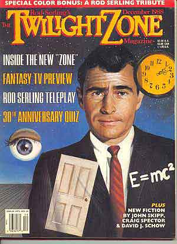
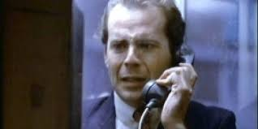
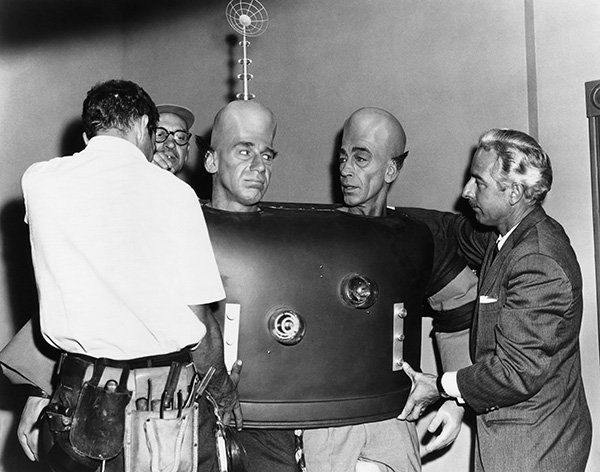
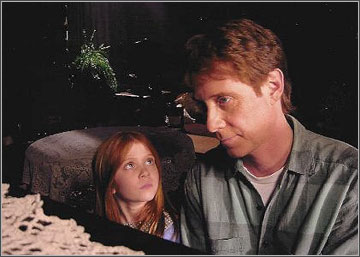
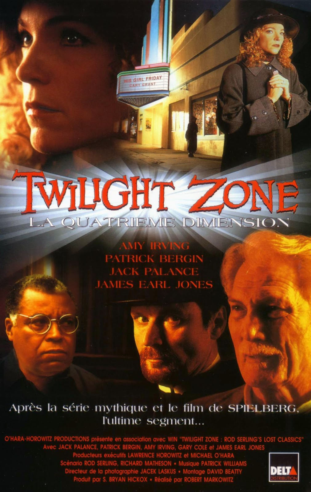

The Twilight Zone Revivals
June 20, 2018 by  Douglas Hawkes
Douglas Hawkes
The Twilight Zone's original series went on from 1959 to 1964. When the original series ended, Rod Serling sold his share of the series back to the CBS Network in which they in turn reluctantly started the first of two revivals that were not even comparable to Rod Serling's acclaimed series.
First Revival (1985-89)
The first season out of three debuted the night of September 27th, and fans for the most part received it warmly. They threw in some new theme music composed by 'The Grateful Dead' and they also went on to make more music for a number of episodes in the series.
I have to say the intro music is really eerie and creepy but the classic series intro music has much more of a solid, loud, scariness to it that doesn't quite just leave your brain right then and there. You would be thinking about the intro music and how scary it sounded while your listening to Rod Serling's opening narration.
I would go as far as to say that the 85' outro theme music had more of a creepy vibe to it than the intro. When I listen to the 85' intro, I feel like it has a childish type effect to it kind of similar to watching the 'Goosebumps' intro but 'Goosebumps' had that classic piano as well that gave you the shivers. Let me know what you guys think.
Intro and Outro
The series had episodes that were adaptations of stories and also new stories. The episodes were slightly scary, moral learning, mysterious and had irony but at times really felt like the mushy less interesting episodes like the 'Kick the Can' episode which was heart felt but could never make it to my top ten.
It also would last for an hour consisting of two to three stories per episode. The ratings for the show were moderately good but had a continual downward slope. Executive Producer Philip Deguere stated that the reason for these low ratings was due to CBS telling him the show would air at 10pm and then changed the schedule last minute to an 8pm family viewing time slot that wasn't quite the demographic for the content of the episodes.
With stars like Bruce Willis, Melinda Dillon, Robert Klein, Morgan Freeman and more it's hard to believe that the ratings were as low as they were. The narration of this revival was done by Charles Aidman who was also an actor in the original series. His voice was clear but couldn't paint a picture as descriptive as Rod Serling's narrations.
Depsite the series' mixed reviews and tanking ratings, it still was a great reincarnation of Rod Serling's classic and if he were alive today I feel like he would be incredibly proud. I will say this first revival was done well but, I feel that sometimes it missed the shock and astonishing endings that were the hallmark of the classic series.
Second Revival (2002-2003)
This series did not last long at all with one season and was not even on the CBS Network this time. UPN(United Paramount Network) was the original network to release this series on September 18th. The series was basically like a knockoff experiment for UPN to remake the original series and try to make it fit for a new generation.
It was very clear that the series was more like a joke and lacked what Rod Serling had a great amount of, PASSION. When watching these episodes it feels as though the writers were almost just riding the coat tails of the brand and not really creating anything new.
The episodes were set for two half hour stories hosted by none other than Forest Whitaker himself which really is not the guy that you would expect and really seems out of place as if the viewers are in the Twilight Zone.
It's like all they wanted to do was draw you in by casting outstanding actors, but then disrespect them by having them work with low grade material. It's really enough to grind your gears when you see actors of this caliber being demeaned by basic material. After a while the stories got very bland so they got desperate and tried to do remakes of the classic 59' series with 'It's Still A Good Life' which was a sequel to the well known 'It's A Good Life' classic even bringing back the little boy Anthony to play an adult Anthony who now has a daughter.
It's safe to say that UPN failed miserably at this attempt to revive the Twilight Zone and I think everyone can agree that the stories here have the same feel as the other revival but in the end I'm always left disappointed at what the episodes could have been if UPN had more creative and innovative writers.
Towards the end of the first revival which was received way better by audiences, CBS network was slowly trying to take more and more control over the series and even replaced the original production team which I think led to the ratings that they received.
I think that coincides with UPN also ruining a revial series by experimenting with garbage debunked stories just like CBS downgrading the shock effect for their revival. There was also another revival called 'Rod Serlings's Lost Classics' in 1994 that consisted of a two hour movie of Rod Serling's forgotten shooting scripts that his widow found in the garbage and presented to CBS. It also received bad ratings and ultimately was rejected from going any further. Can anyone get these reboots right? To answer that question go to the Twilight Zone Reboot post.
Guys, thank you so much for visiting the 'Twilight Talk' blog and if you enjoyed this post please go head and subscribe and also let me know what you all thought of this post down in the comments. Thanks again guys, more interesting Twilight Zone posts coming very soon.